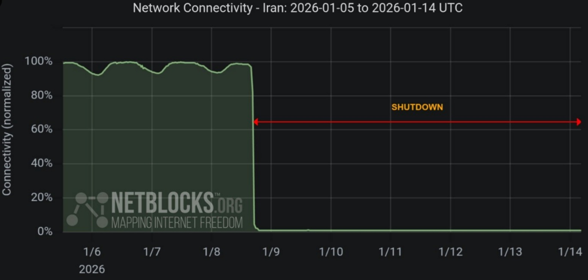

The Islamic Republic's response to peaceful protesters has been swift, brutal, and deadly. What unfolded in January 2026 represents systematic genocide—the largest massacres in modern Iranian history and one of the worst state-sponsored mass killings of the 21st century.
The Genocide Begins
On January 8, 2026, dictator Ali Khamenei issued a direct order to security forces: "Crush the protests by any means necessary." What followed has been described by observers as "Iran's Babi Yar"—a reference to the Nazi massacre in Ukraine—given its tremendous scale and brutality. This was not crowd control. This was genocide.
Secretary of the Supreme National Security Council Ali Larijani has been identified as the mastermind behind the massacres. Under his coordination, Iranian security forces, including the Revolutionary Guards, Basij militia, and plainclothes agents, deployed across the country with orders to use lethal force against demonstrators.
Methods of Repression
Security forces employed systematic and indiscriminate violence against protesters:
- Live Ammunition: Forces fired directly into crowds of peaceful protesters without warning, using automatic weapons including Kalashnikov rifles.
- Sniper Positions: Government forces stationed snipers on rooftops, footbridges, and elevated positions to target protesters, with witnesses reporting snipers aiming specifically for heads and torsos.
- Mass Shootings: In multiple cities, security forces opened fire on trapped crowds, including one incident in Rasht where forces surrounded protesters in the bazaar, set it on fire, and shot those attempting to escape.
- Hospital Raids: Security forces entered hospitals to seize bodies of killed protesters and forcibly removed wounded demonstrators to prevent documentation of casualties.
- Targeted Killings: At least 35 minors under age 18 were killed, with three children documented among the dead in the first eight days alone.
The January 8 Internet Blackout
On January 8, 2026, the Iranian government implemented a complete nationwide internet shutdown, cutting off Iran from the outside world. This deliberate communications blackout served a sinister purpose: to prevent documentation of the massacres and hide the scale of killing from international observers.
Nobel Peace Prize laureate Shirin Ebadi issued a dire warning on January 9: "Under the Internet blackout, the Islamic Republic may massacre the protesters." Her fears proved tragically prescient. During the blackout period, the death toll soared into the tens of thousands, with limited information escaping only through satellite connections like Starlink.

"We're standing up for a revolution, but we need help. Snipers have been stationed behind the Tajrish Arg area. We saw hundreds of bodies throughout Tehran."
— Protester testimony via Starlink, January 10, 2026
Mass Casualties and Makeshift Morgues
The scale of killing overwhelmed Iran's morgue system. Distressing footage emerged on January 10 showing a makeshift morgue established at the Legal Medicine Organization in Kahrizak, near Tehran. Video analysis by Amnesty International identified at least 205 distinct body bags in this overflow facility alone, with distraught families searching for their loved ones among the dead.
German-Iranian surgeon Amir Parasta, analyzing hospital records, reported a total of 30,304 protest-related deaths, explicitly noting this figure excluded deaths in military hospitals, bodies taken directly to morgues, and deaths in hospitals not included in his data set. Medical workers described the Iranian administration running out of body bags and resorting to using semi-trailer trucks instead of ambulances.
One medical worker from Mashhad told Amnesty International: "On the night of January 9, the deceased bodies of 150 young protesters were brought into one hospital and then taken to Behesht Reza Cemetery near Mashhad."
Regional Massacres
Tehran: The capital bore the highest death toll. On January 8 alone, at least 217 people were killed in Tehran. Witnesses described "hundreds of bodies" throughout the city, with particularly heavy casualties in neighborhoods like Tehranpars and Narmak where security forces fired from police station rooftops.
Rasht: At least 392 people were killed in Rasht, the vast majority during the internet blackout period. In one horrific incident, security forces surrounded and trapped protesters inside the Rasht Bazaar, set the building on fire, and shot people attempting to surrender or escape while blocking fire trucks from responding.
Shiraz: Hospitals were overwhelmed with injured protesters, many suffering gunshot wounds. Security forces were filmed driving vehicles over protest barriers.
Mashhad: In Razavi Khorasan province, security forces fired directly at protesters and bystanders without warning from elevated positions. One eyewitness described: "They were using tear gas and stun grenades and shot directly at protesters. They even fired tear gas inside people's homes."
Nassimshahr: A protester testified: "They relentlessly fired on people as they were fleeing. They killed people on [January 8]. They also fired at everyone on [January 9] and killed people. Tell the whole world."
Systematic Arrest and Torture
Alongside the killings, Iranian authorities conducted mass arrests. As of mid-January, more than 18,000 people had been detained, according to human rights groups. Many were subjected to torture, forced confessions, and threats of execution.
The regime announced plans to execute detained protester Erfan Soltani, age 26, on January 14, 2026. This prompted a warning from US President Donald Trump that executions would trigger strong American action. Chief Justice Gholam-Hossein Mohseni-Ejei declared there would be "no leniency" for protesters, whom he accused of working with foreign enemies.
International Condemnation
The massacres drew worldwide condemnation. Amnesty International documented mass unlawful killings and called for global diplomatic action to end impunity. The organization verified video evidence showing security forces systematically firing on fleeing protesters, pursuing wounded individuals, and preventing medical care.
President Trump repeatedly warned Iran that continued killing would result in US intervention, stating: "When they start killing thousands of people... It's not going to work out good." He threatened that Iran's leaders "have been told very strongly that if they do that, they're going to have to pay hell."
Israeli Prime Minister Benjamin Netanyahu also backed the protesters, though Israel maintained a cautious military posture. The international community, however, ultimately did not intervene militarily to stop the massacres.
The Regime's Lies and Propaganda
Dictator Ali Khamenei acknowledged that "thousands of people" had been killed but blamed US President Trump and falsely claimed all protesters were "rioters and terrorists" affiliated with America and Israel. The regime characterized the democratic uprising as a foreign-orchestrated plot, denying Iranians' genuine grievances and aspirations for freedom—a classic tactic of authoritarian regimes committing genocide.
On January 21, Iranian state television released fabricated death toll figures designed to minimize the scale of their genocide. Internal government documents, however, tell the true story. Reports to the Ministry of Interior on January 20 showed counts above 30,000. Intelligence Organization of the Islamic Revolutionary Guard Corps reported 33,000 deaths on January 22 and 36,500 on January 24.
Independent documentation by the US-based Human Rights Activists News Agency (HRANA) documented thousands of deaths, including 4,251 protesters and 35 minors under age 18. German-Iranian surgeon Amir Parasta's analysis of hospital records revealed 30,304 protest-related deaths, explicitly excluding military hospitals and direct-to-morgue transfers.
The regime's propaganda numbers are a transparent lie designed to cover up genocide. The true death toll is between 27,500 and 36,500+ killed in this systematic massacre of the Iranian people.
Ongoing Genocide
As of January 25, 2026, the Islamic Republic has reasserted some control through genocide and overwhelming force, but resistance continues. Iranians have been reported dancing at funerals of massacre victims as a form of defiance. The regime's use of systematic mass killing to maintain power constitutes genocide and crimes against humanity. The international community must invoke Responsibility to Protect (R2P) to stop this ongoing genocide and ensure justice for the victims.
One of the most horrifying revelations to emerge from the January 2026 massacres was what was happening inside Iran's morgues — particularly the Kahrizak Forensic Medicine Center, located 18 kilometers south of Tehran. Videos that managed to escape Iran's internet blackout revealed scenes that shocked the world and exposed the full brutality of the regime's response to the uprising.
Bodies Piled in Warehouses
Starting January 10, distressing footage emerged showing the Kahrizak facility had been converted into a makeshift morgue to handle the overflow of bodies from official facilities. Verified videos showed dozens of body bags laid out inside large warehouse-style halls, with refrigerated trucks arriving to unload additional bodies. Human Rights Watch counted at least 400 bodies visible in several videos from this site alone — and noted this was an undercount, as bodies were piled on top of each other, making counting difficult.
Families arrived in desperate, chaotic scenes, searching among hundreds of body bags for their loved ones. One video showed a screen inside the facility displaying photos of the deceased with a numerical counter that reached 250, indicating the staggering number of bodies being processed. An eyewitness described the scene to BBC Persian: "They reached an autopsy hall where bodies were piled on top of each other. There was one room that was so full of bodies the door would not even open. Another room contained the women's bodies."
Bodies were not limited to Kahrizak. Reports confirmed that victims' remains were also being stored in warehouses, freight containers, and cemeteries — including Tehran's Behesht Zahra Cemetery complex. One witness who went to identify a loved one on January 10 described: "When we got close to the halls, we saw bodies piled on top of bodies. They were in body bags, and some had tags with identification details. From the size of the halls, I could estimate that between 1,500 to 2,000 bodies were held there." More bodies were arriving by refrigerated trucks even as families searched.
Amnesty International analyzed five videos from the Kahrizak morgue and, after accounting for potential duplication, identified at least 205 distinct body bags in this single overflow facility.
Charging Families for the Bullets That Killed Their Children
In one of the most sadistic and inhumane acts documented during the crackdown, Iranian authorities demanded that families pay for the bullets used to kill their relatives before they could retrieve the bodies. This practice — reported consistently across multiple cities and confirmed by Iran International, Human Rights Watch, and multiple rights groups — represents an act of extraordinary cruelty designed to further terrorize grieving families.
The amounts demanded ranged from 700 million rials to 2.5 billion rials per bullet, depending on the case. At the current exchange rate of approximately 1,450,000 rials to the US dollar, this translates to roughly $480 to $1,720 per bullet. To put this in perspective, the average monthly income of a worker in Iran is less than $100 — making these payments unaffordable for the vast majority of families.
While this practice has been used by Iranian authorities in previous crackdowns, rights groups described its application during the January 2026 massacres as unusually widespread and systematic.
Blackmailing and Intimidating Families
The regime did not stop at demanding payment. Security forces and Revolutionary Guard members systematically intimidated and blackmailed the families of killed protesters in multiple ways. Families attempting to retrieve the bodies of their relatives faced pressure from plainclothes agents and security forces who imposed strict conditions on the process.
In several cities, authorities made the free release of bodies conditional on families accepting that their killed relatives be officially registered as Basij members — allegedly killed by protesters rather than by security forces. Rights monitoring group Dadban confirmed that this practice amounted to forced identity alteration, designed to inflate official claims of security force casualties and support the regime's false narrative that the unrest involved "terrorist elements."
There have also been reports that families were unable to locate the remains of their relatives after authorities secretly buried them in locations far from where the deaths occurred. Security forces raided the homes of families who had managed to retrieve bodies, and audio testimonies describe hospitals where security forces intervened to prevent bodies from being released or funerals from taking place.
One particularly harrowing account described a nurse who died by suicide after being exposed to what was described as an overwhelming number of corpses at a facility during the crackdown.
The regime has also been accused of using footage of protesters' bodies in morgues as a deliberate tool to demoralise and frighten future protesters — turning the dead into instruments of fear.